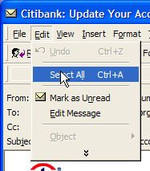

BlunderLab
Notebook
B040802
Candling Phish
|
|
BlunderLab
Notebook
B040802 |
I happened to receive some phish e-mails while I was in the midst of an on-line course in Information Security Engineering. It was perfect time for my receiving some spam in my student account, because the mail reader that we use for the computer-mediated distance learning does not render HTML-formatted e-mail properly.
When I realized from the message subject that one of the spam had to be a phish, I was curious enough to look it over. And I found out how it works.
It is rather clever how some phish e-mail is arranged to hide the URL of the phish-hook. Then pop-up techniques are used for sleight-of-hand purposes and to prevent you from noticing that the spoof is in front of a legitimate web page. I'll talk about that another time.
What I want to share with you right now is a way to detect a wide class of spam and phish attacks from the safety of your in-basket. You can do it now, it takes almost no effort, and it can be quite entertaining.
I have a small collection of e-mail spam, viruses, and phish attacks. Here's one exactly like the one that was received in the in-basket for my on-line course. But it arrived in my Microsoft Outlook in-basket, and it would look like this in Outlook Express, in Hotmail on-line, and who knows where else:
I'm showing you this nearly full size so that you can appreciate the impact of it. I have a trained eye and I already know that this is a phish. I wouldn't be opening it now except there's something I want you to see.
I also disconnected from the internet before I opened this email. I knew that I wasn't going to follow that apparent link even by accident.
For what we are about to do next, it is like letting the dental assistant put the lead blanket over you.
So, you've received this in your e-mail, wherever you receive e-mail, and there's this nagging question. You've opened it, so your guard is already down, but there's some hesitation. Here's what you do:

Find the Edit | Select All menu item or its equivalent in your mail reader. This is going to stick a gamma-ray candle behind that message. Just do it, there's no harm.
Look at all of that nonsense! Do you really think Citibank hides secret messages in their e-mail? Well, maybe you do.
There are two important things to notice, along with all of the other give-aways that this is not a legitimate message:
The visible message is actually an image. That means the URL in the image is not a link, it is a picture of a link. Since there is a link behind the image (look at the change of cursor in the first screen shot), it might be a phish-hook -- a well-hidden phish-hook. Don't bite.
I first thought the nonsense words were some sort of secret message that phishers use for their anti-social purposes. Or it is some kind of hacker's signature and bragging? Well, I have an over-active imagination and it is simpler than that. It is so simple that it is a death trap for this kind of spam. I'm not going to say why here. I will let readers of my blog figure it out and report in the comments to my blog about this.
First, make it a habit to "candle" mail that has links in it, assuming you have bothered to open it and you just can't resist thrill-seeking.
Secondly, tell all your friends. If you have teen-agers, or you are a teen-ager, tell and show all of your friends that are/have teen-agers. And, once you figure out how that invisible ink works, use it. Send notes to your friends, talk about your parents and teachers, do all sorts of things that has those of you in the know go looking for the secret messages. And most of all, Always Use Protection.
I cannot believe how simple this is. I am beside myself. As Billy Connelly once said, "wanking brilliant!" Well, that was the gist of what he said.
-- Prof. Heinz Arnold Said von Clueless, DMV OHC BOB
|
|
You are navigating Orcmid's Lair |
created 2004-08-03-15:47 -0700 (pdt) by orcmid |